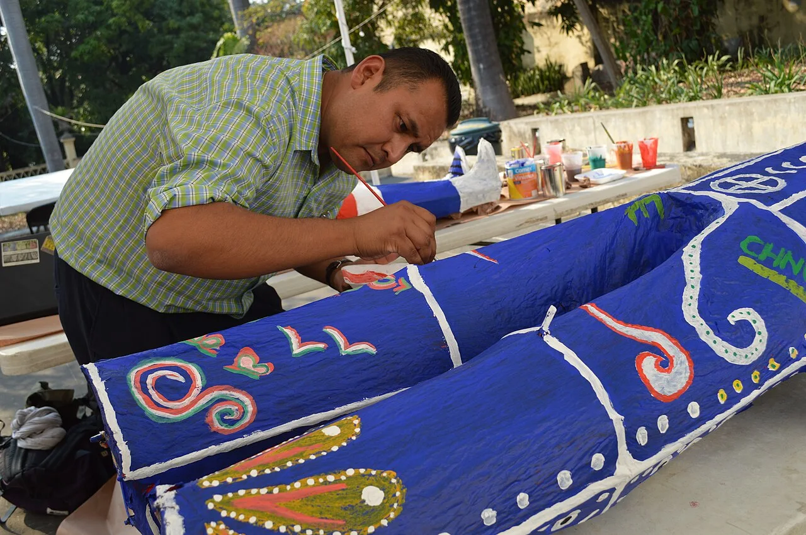
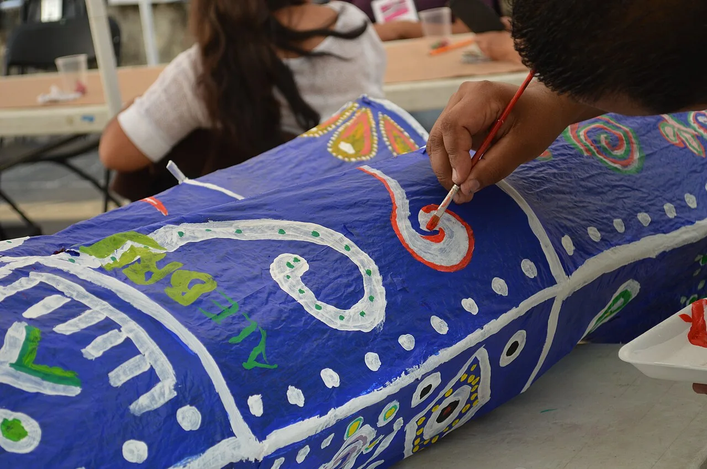

El Judas azul está apoyado mientras se pinta. En una fotografía vemos a la persona trabajando; en la otra, el pincel y el dibujo sobre la superficie. Los registros del encuentro de cartonería de Cuernavaca, tomados en 2016, muestran una fase tardía del proceso. El volumen ya existe. La pregunta menos visible es cómo se consiguió que el papel tuviera esa forma antes de recibir el color.
Una ficha del Sistema de Información Cultural sobre la cartonería de Celaya describe figuras elaboradas por mitades mediante moldes, su unión y el revestimiento con papel y engrudo. Para los Judas gigantes menciona un alma de carrizo. Son dos maneras de resolver una construcción hueca: reproducir superficies y reunirlas, o dar soporte a un volumen de mayor escala. La ficha fue actualizada en 2009 y no describe específicamente la pieza fotografiada. [1]
La diferencia entre superficie y armadura es decisiva. El espectador reconoce un cuerpo continuo, mientras el trabajo puede haber exigido piezas, juntas y apoyos. Una vez pintado, el objeto oculta buena parte de esa organización. Por eso una lectura dedicada únicamente a los colores deja fuera decisiones que permiten que la figura pueda existir y manipularse.


Trabajar por mitades introduce un límite que debe resolverse al unir. La posición de esa unión puede afectar la continuidad del contorno y la facilidad de elaboración. Una armadura plantea otro problema: cómo distribuir apoyos sin que su presencia estorbe a la forma. No hay una respuesta universal para todos los tamaños y usos. La construcción se define junto con la figura que se busca realizar.
Las fotografías del segundo Encuentro Nacional de Cartonería Tradicional permiten observar un dibujo que recorre el azul y mantiene separaciones entre motivos. El soporte curvo obliga al pintor a cambiar de posición y ajustar el gesto. La superficie no es un lienzo plano que pueda comprenderse completamente desde un solo lugar. La pintura acompaña un objeto que se gira y se aproxima al cuerpo. [2]
La cartonería mantiene una relación con calendarios festivos y también con el coleccionismo, según la ficha del SIC. Esa diferencia de destino modifica lo que se espera de una pieza. Un objeto preparado para un uso breve no enfrenta exactamente las mismas condiciones que uno destinado a conservarse. La técnica no puede evaluarse al margen de su tiempo y forma de uso. [1]
La duración temporal puede engañar a quien mira: si algo no va a permanecer, parece menos necesario resolverlo con cuidado. En realidad, montar, transportar y utilizar una figura exige anticipar situaciones concretas. El esfuerzo no se mide solo por los años que el objeto sobrevivirá. También cuenta la precisión con que cumple su función durante el tiempo para el que fue hecho.


El papel recuperado añade otra pregunta, pero no permite declarar sostenible a toda la práctica. Procedencia del material, adhesivos, pintura, transporte y destino final tendrían que evaluarse. Lo que sí podemos observar es una capacidad de transformar una materia asociada a la hoja en un cuerpo que ocupa espacio. Esa traducción tiene interés por sí misma, sin necesitar una certificación ambiental imaginaria.
Para documentarla mejor habría que seguir una pieza desde el comienzo y conservar imágenes de las operaciones que luego desaparecen. El reverso, la unión y el apoyo pueden explicar más que una fotografía impecable del resultado. También permitirían distinguir las decisiones de distintos talleres, en lugar de presentar la cartonería mexicana como una técnica idéntica en todo el país.
El Judas pintado consigue una presencia que parece inmediata: una figura, un gesto y un color. Su construcción recuerda que esa inmediatez es un resultado. El diseño participa al resolver qué sostiene a qué, qué se une y qué termina por ocultarse. Mirar dentro del papel permite reconocer el trabajo que una superficie bien terminada vuelve difícil de ver.
Fuentes.
- Sistema de Información Cultural de México — Cartonería. Judas y calaveras; ficha técnica de Celaya, actualizada en 2009
- Archivo fotográfico de Alejandro Linares García — segundo Encuentro Nacional de Cartonería Tradicional, Cuernavaca, 06.02.2016
La ficha técnica se refiere a Celaya y las fotografías a un encuentro en Cuernavaca: no se asume que documenten el mismo taller o procedimiento. Este ensayo no incluye instrucciones pirotécnicas ni acredita prácticas actuales.
Fuentes consultadas el 15.11.2026. Análisis e interpretación: RUMMOR. Edición privada para revisión.